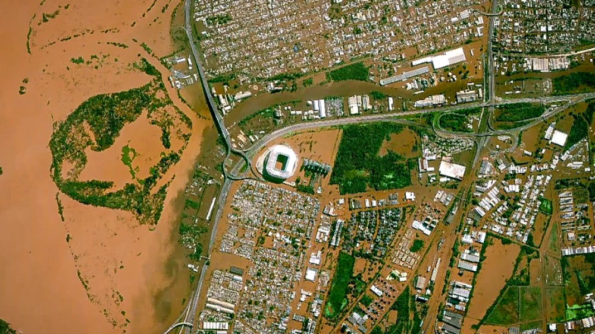

Enchentes em Porto Alegre
O estado do Rio Grande do Sul viveu em 2024 a maior crise climática da sua história. Porto Alegre teve bairros inteiros alagados por dias. Muitas vítimas não sabiam como agir.
Falta um sistema simples, acessível e funcional para informar a população em momentos críticos, principalmente quem mora em regiões de risco.
O Pluvius Web surgiu para ajudar pessoas comuns a saberem o que fazer antes, durante e depois de uma enchente — mesmo sem internet boa ou apps pesados.